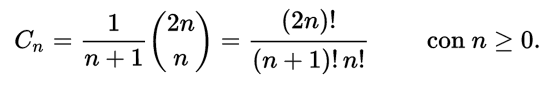
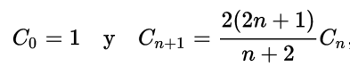
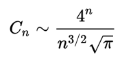
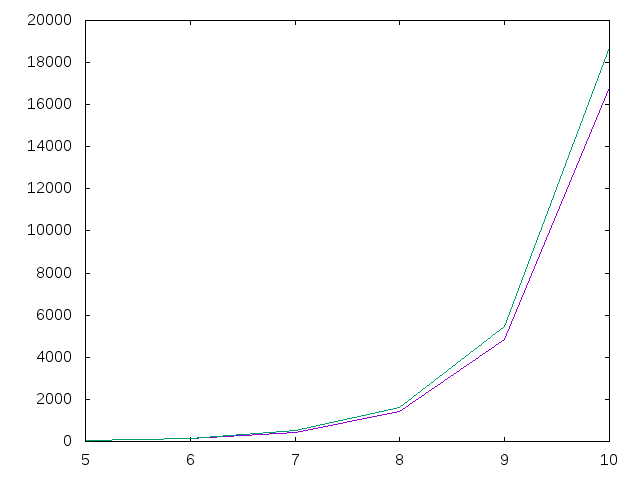
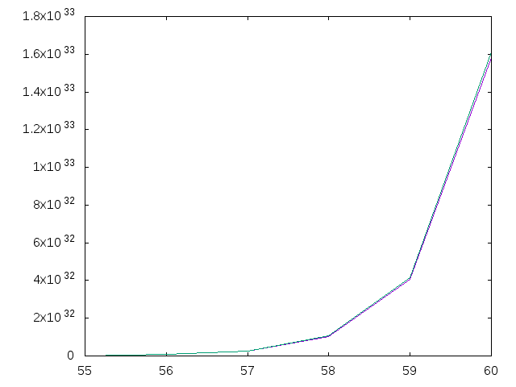

Números de Catalan
Los números de Catalan forman la sucesión cuyo término general es

Los primeros números de Catalan son
1, 1, 2, 5, 14, 42, 132, 429, 1430, 4862, 16796, 58786
Los números de Catalan satisfacen la siguiente relación de recurrencia:

Asintóticamente, los números de Catalan crecen como:

considerando que el cociente entre el n-ésimo número de Catalan y la expresión de la derecha tiende hacia 1 cuando n tiende a infinito.
Definir las funciones
catalan :: [Integer] grafica :: Int -> Int -> IO ()
tales que
- catalan es la lista de términos de la sucesión de Catalan. Por ejemplo,
λ> take 12 catalan [1,1,2,5,14,42,132,429,1430,4862,16796,58786] λ> length (show (catalan !! 50000)) 30096
- (grafica a b) dibuja los n-ésimos términos de la sucesión de Catalan, para n entre a y b, junto con los de la expresión de la derecha de
Por ejemplo, (grafica 5 10) dibuja

y (grafica 55 60) dibuja

Soluciones
import Graphics.Gnuplot.Simple catalan :: [Integer] catalan = scanl (\c n -> c*2*(2*n-1) `div` (n+1)) 1 [1..] grafica :: Int -> Int -> IO () grafica a b = plotLists [Key Nothing] [[(fromIntegral n, fromIntegral (catalan !! n)) | n <- [a..b]] ,[(n,4**n/(n**(3/2)*(sqrt pi))) | n <- [c..d]]] where c, d :: Double c = fromIntegral a d = fromIntegral b